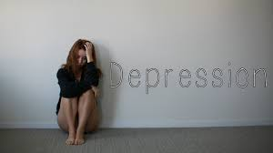
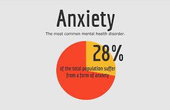
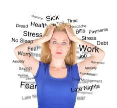

Depression is a serious medical illness that negatively affects how you feel, the way you think and how you act. To prevent having it you can improve your self esteem, get enough sleep, eat well, exercise, talk to friends and family, and medical checkups. To cure it you can take medications, go to therapy, and going to the doctors.
Anxiety is a term for several disorders that cause nervousness, fear, apprehension, and worrying. Anxiety can cause heart disease, kidney disease, and stroke with those with diabetes. To prevent having this you should have a balanced diet, limit alcohol and sugar and keep a journal. Cures are to have self care, take medications, and going to therapy. Eating dark chocolate, blueberries, almonds, yogurt, salmon, etc,. could also help.
Stress is how your body responds to any kind of task, demand, or threat. You know you are stressed when you have low energy. get headaches, have upset stomach, aches, frequent colds, and gray hair. Ways to cope with stress is to undertsand how you stress, take deep breathes, find healthy ways to manage stress like exercising, take care of yourself or you can reach out for support.
Here is a hotline you can reach out to if you need support and guidance with any mental issues you or a loved one may have. Call 1-800-273-8255 or 1-866-247-8998.